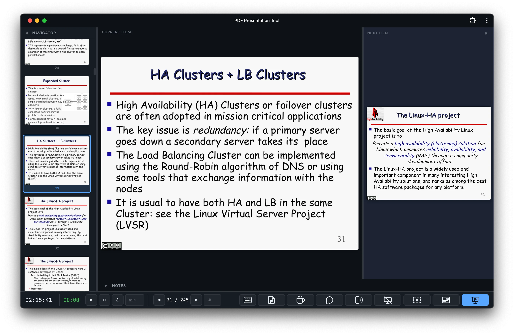
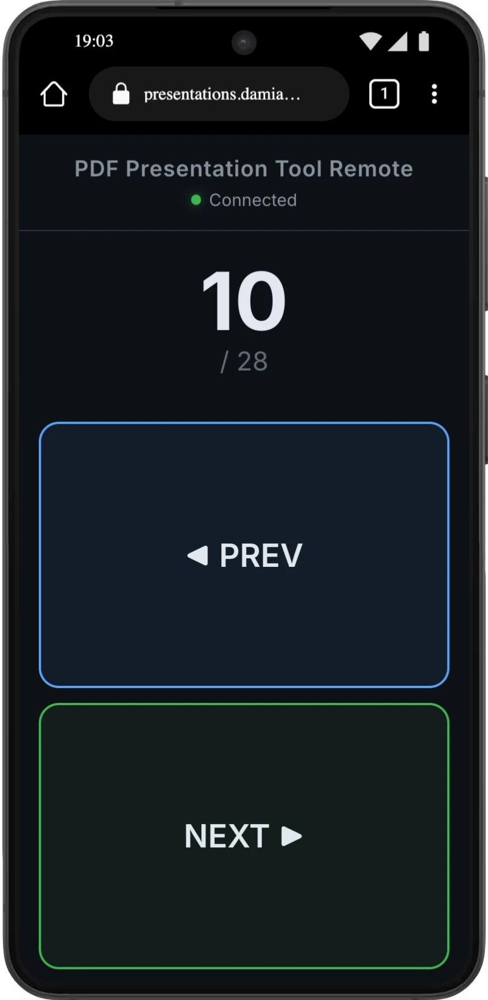
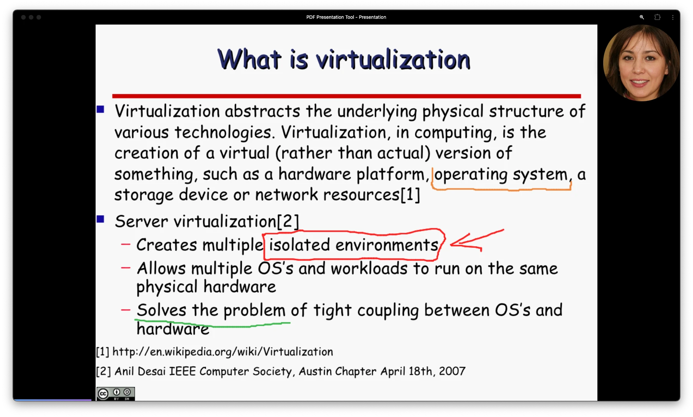
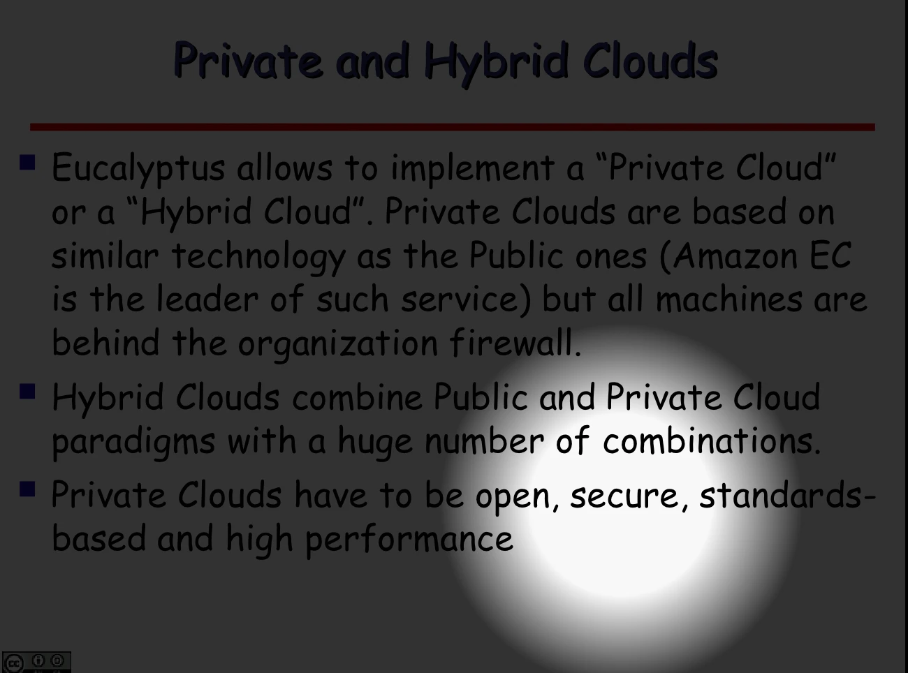

Welcome to PDF Presentation Tool, a modern, browser-based ecosystem designed to revolutionize the way you deliver dual-monitor presentations.

Presenter User Interface
Delivering a professional presentation often requires compromising on control or privacy. Presenting a standard PDF file on two screens typically causes the speaker to lose access to their personal notes, or forces them to awkwardly mirror the display. While specialized LaTeX formats like Beamer allow for split-mode notes, finding software that can reliably display the slide to the audience while keeping the notes strictly on the presenter's screen is notoriously difficult.
Historically, presenters have been forced to choose between installing heavy, bloated desktop applications or uploading their sensitive, private slide decks to third-party cloud services just to get a decent dual-screen view. I built PDF Presentation Tool to break this compromise.
PDF Presentation Tool is a powerful, offline-capable application that runs entirely within your web browser. There is no software to install, no accounts to create, and no file uploads required. Your media files whether they are PDFs, Images, or Videos are processed securely and locally by your computer's own hardware.
By simply connecting to a secondary screen and clicking "Present", the system instantly orchestrates a flawless dual-screen interaction, offering a private control dashboard for the speaker and a clean, distraction-free view for the audience.

Phone Remote Control Interface
I strongly believe that professional educational tools should be accessible, transparent, and respectful of user data. That is why PDF Presentation Tool is built with a fundamentally privacy-first architecture. Because the application processes everything on the client-side, your slides and proprietary data never leave your device.
Furthermore, I am excited to announce that the entire source has been released as Open Source. This will allow developers and educators from around the world to audit the privacy mechanics and contribute developing new features. Link to the official repository: https://github.com/DamianoP/pdf_Presentation_Tool

Webcam Bubble Interface, drawing on the slides

The torch tool